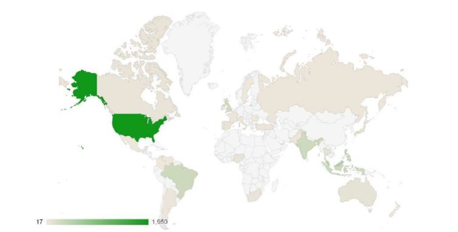

Principles of Big Data - Twitter Tweets Visualizaton
Countris which tweeted more about entertainment!
Close

Top 10 languages used to tweet!
Close
Users most preferable URLS used in their tweets!
Close
Verified users v/s non-verified users!
Close
Analysis on US states which tweeted more on movies from which place!
Close
Top most users followed on twitter!
Close
Most tweet tweeted from which timezone!
Close